Pioneers
Dieser Artikel wurde für die folgenden Ubuntu-Versionen getestet:
Ubuntu 16.04 Xenial Xerus
Zum Verständnis dieses Artikels sind folgende Seiten hilfreich:
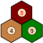
Pioneers  (ehem. Gnocatan) kennen vielleicht nur wenige. Wenn aber das Schlagwort "Die Siedler von Catan" fällt, weiß meistens jeder, was gemeint ist. Pioneers ist ein sehr guter Siedler-Klon, der aufgrund seiner wunderbaren Netzwerk-Integrierung gern zu einer Runde gegen die Kollegen am Nachbartisch einlädt.
(ehem. Gnocatan) kennen vielleicht nur wenige. Wenn aber das Schlagwort "Die Siedler von Catan" fällt, weiß meistens jeder, was gemeint ist. Pioneers ist ein sehr guter Siedler-Klon, der aufgrund seiner wunderbaren Netzwerk-Integrierung gern zu einer Runde gegen die Kollegen am Nachbartisch einlädt.
Pioneers basiert auf dem 1995 von Klaus Teuber entwickelten Spiel des Jahres Die Siedler von Catan. Es wurde 1999 erstmals unter dem Namen „Gnocatan“ vertrieben, aufgrund rechtlicher Probleme aber 2005 in „Pioneers“ umbenannt. Prinzipiell ist es aber egal, wie es heißt. Wichtig ist, was drinsteckt – und das ist eine Menge.
Pioneers hat einen sehr großen Spielumfang, wichtig sind vor allem aber folgende zwei Sachen: Ein Einzelspielermodus mit einer relativ guten KI, wenn gerade mal kein Mitspieler in Internet-Reichweite ist und einen Mehrspielermodus, bei dem man sich mit realen Gegnern messen kann.
Installation¶
Aus den Paketquellen¶
Pioneers befindet sich in den Ubuntu-Quellen und kann daher ganz normal installiert werden [1]. Das Spiel ist in ein Server- und ein Clientpaket aufgeteilt. Den Client benötigt man, um an einem Spiel teilzunehmen, den Server, um selbst eins zu starten.
pioneers (universe, der Client mit grafischer Oberfläche)
pioneers-meta-server (universe, der Meta-Server, der die Spiele verwaltet)
 mit apturl
mit apturl
Paketliste zum Kopieren:
sudo apt-get install pioneers pioneers-meta-server
sudo aptitude install pioneers pioneers-meta-server
Manuelle Kompilierung¶
Möchte man das Spiel selbst kompilieren, benötigt man die folgenden Pakete (und deren Abhängigkeiten):
gnome-common
gob2
intltool
libavahi-client-dev
libavahi-glib-dev
libgnome2-dev
libgtk-3-dev
libnotify-dev
librsvg2-bin
libtool
netpbm
xfonts-scalable
mit apturl
Paketliste zum Kopieren:
sudo apt-get install gnome-common gob2 intltool libavahi-client-dev libavahi-glib-dev libgnome2-dev libgtk-3-dev libnotify-dev librsvg2-bin libtool netpbm xfonts-scalable
sudo aptitude install gnome-common gob2 intltool libavahi-client-dev libavahi-glib-dev libgnome2-dev libgtk-3-dev libnotify-dev librsvg2-bin libtool netpbm xfonts-scalable
Den Quellcode erhält man von der Downloadseite  und kompiliert diesen [2]. Nach der erfolgreichen Kompilierung und Installation kann Pioneers über das Menü "Anwendungen -> Spiele" gestartet werden.
und kompiliert diesen [2]. Nach der erfolgreichen Kompilierung und Installation kann Pioneers über das Menü "Anwendungen -> Spiele" gestartet werden.
Konfiguration¶
Der Client¶
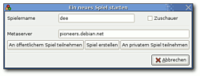 Der Client stellt eine Verbindung zu einem Server her und stellt die Spieldaten grafisch dar. Man findet ihn unter "Anwendungen -> Spiele -> Pioneers". Anschließend kann unter "Spiel -> Neues Spiel" ein neues Spiel gestartet werden.
Als Spielername kann man sich einen passenden auswählen, der zu einem echten Eroberer und Herrscher passt. Bei Bedarf kann man das ganze Geschehen nur als passiver Zuschauer verfolgen. Der voreingestellte Metaserver "pioneers.debian.net" sollte nicht verändert werden, da über ihn alle öffentlichen Spiele laufen. Die drei unteren Schaltflächen sind am wichtigsten:
"An öffentlichen Spiel teilnehmen": Hierüber kann man einem öffentlichen Spiel im Internet beitreten.
"Spiel erstellen": Dies startet ein eigenes Spiel über den Server, siehe weiter unten.
"An privatem Spiel teilnehmen": Hierüber kann man einem privaten Spiel, das heißt in einem Netzwerk, beitreten.
Der Server¶
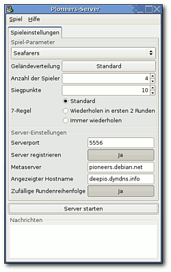 Der Server erstellt ein Spiel und sorgt dafür, dass die Spieldaten korrekt an alle Parteien verteilt werden. Das geschieht meistens über einen Metaserver wie z.B. "pioneers.debian.net". Man kann den Server über "Anwendungen -> Spiele -> Pioneers Server" oder direkt aus dem Menü heraus über "Spiel -> Neues Spiel -> Spiel erstellen" öffnen.
Im ersten DropDown-Menü wählt man das Spielfeld aus. Pioneers beherrscht dabei nicht nur das Basisspiel, sondern auch einige Erweiterungen wie "Die Seefahrer". Darunter stellt man die Geländeverteilung, die Anzahl der Spieler (menschlich und künstlich) und die Anzahl der Siegpunkte ein.
Die Server-Einstellungen sind das wichtigste. Den Port lässt man am besten auf "5556" stehen. Das Feld Metaserver sollte ebenfalls so gelassen werden. Möchte man nur alleine spielen, so stellt man "Server registrieren" auf "Nein" und macht im Abschnitt Einzelspielermodus weiter. Falls nicht, stellt man hier auf "Ja". Im Feld "Angezeigter Hostname" muss entweder die eigene IP-Adresse stehen, die man z.B. mittels ifconfig im Terminal herausgefunden hat oder man besorgt sich auf DynDNS ein Konto und kann dann (wie im Screenshot zu sehen) einen richtigen Hostnamen angeben und somit einen permanenten Spieleserver einrichten. Das weitere Vorgehen ist im Abschnitt Mehrspielermodus erklärt.
Zum Schluss kann man den Server durch  -Klick auf die zugehörige Schaltfläche starten. Danach kann man an den Spieleinstellungen nichts mehr ändern.
-Klick auf die zugehörige Schaltfläche starten. Danach kann man an den Spieleinstellungen nichts mehr ändern.
Im neuen Reiter "Laufendes Spiel" kann man den Chat ein- und ausschalten, Computerspieler hinzufügen und den Server wieder stoppen. Das Server-Fenster kann für die Dauer des Spiels in den Hintergrund verschoben werden, darf aber nicht geschlossen werden.
Benutzung¶
Einzelspielermodus¶
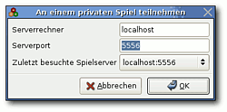 Im Einzelspielermodus muss man zuerst auf dem Pioneers-Server (siehe oben) ein Einzelspielerspiel erstellt haben, das heißt die Option "Server registrieren" muss auf "Nein" stehen. Danach wählt man im Hauptfenster "Spiel -> Neues Spiel -> An privatem Spiel teilnehmen".
Als Serverrechner wählt man "localhost" und als Port denjenigen, den man zuvor eingestellt hat, also meistens "5556". Mit "OK" tritt man dem Spiel bei. Bevor es losgeht, muss man aber gegebenenfalls noch im Server-Fenster weitere Computerspieler hinzufügen. Erst wenn die vorgegebene Zahl voll ist, startet das Spiel. Die Reihenfolge der Spieler wird vom Computer ausgelost.
Mehrspielermodus¶
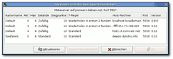 Entweder eröffnet man selbst ein Mehrspielerspiel wie oben beschrieben oder man nimmt an einem anderen Spiel teil. In jedem Fall wählt man im Hauptfenster "Spiel -> Neues Spiel -> An öffentlichen Spiel teilnehmen".
Hinweis:
In der Liste sieht man oft viele Spiele, die aber leider falsch erstellt wurden. Die Ersteller haben weder ihre IP, noch einen korrekten Hostserver eingetragen, sodass eine Verbindung nicht möglich ist.
Spielstart¶
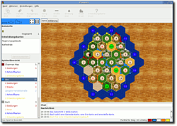 An dieser Stelle soll nicht erklärt werden, wie sich Pioneers spielt, da die Regeln identisch zu "Die Siedler von Catan" sind. Es sollen dagegen ein paar Besonderheiten und Optionen von Pioneers aufgezeigt werden.
Das Spielfenster ist übersichtlich aufgebaut, nur bei extrem hohen Karten ist die Übersicht etwas klein. Unter dem Spielfeld findet man das Chatlog, in dem auch alle Aktionen der Gegenspieler festgehalten werden. Auf der rechten Seiten findet man die eigenen Rohstoffe und Karten und darunter die aktuelle Punktzahl, aufgeschlüsselt nach den verschiedenen Gebieten. Ganz wichtig ist auch die obere Anzeige (im Screenshot hellblau), die sagt, wie viele Spielelemente noch verbaut werden können.
Ganz oben sieht man die einzelnen Aktionen, die man zum jeweiligen Zeitpunkt ausführen kann. Man kann diese unter "Einstellungen -> Werkzeugleiste" deaktivieren, falls man die Tastenkürzel im Kopf hat. Man findet alle Angaben auch noch im Menü "Aktionen". Zusätzlich gibt es im Menü "Spiel" noch weitere nützliche Sachen. So kann man sich die aktuellen Spieldaten unter "Spieleinstellungen" anschauen oder ein Fenster mit den "Erklärungen" zum Spiel einblenden.
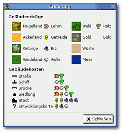
Die Legende kann man auch permanent als Reiter einblenden lassen. Die Option dafür findet man unter "Einstellungen -> Einstellungen -> Legende Anzeigen". Neben diversen anderen Einstellungen findet man dort auch verschiedene Themen, die sich auf den Spielfeldhintergrund, aber viel wichtiger, auch auf die Karten auswirken. Man hat folgende Auswahl:
| 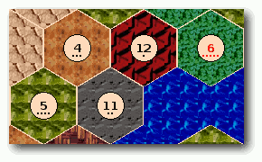 | 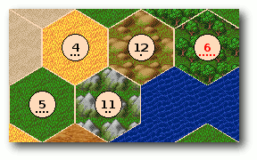 |
| Thema "Default" | Thema "FreeCIV-like" |
| 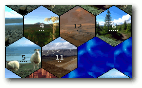 | 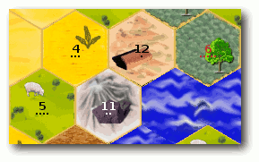 |
| Thema "Iceland" | Thema "Tiny" |
| 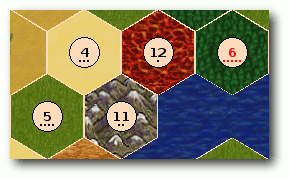 | 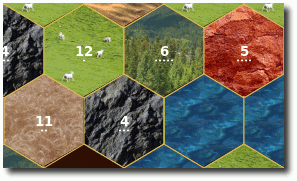 |
| Thema "Wesnoth-like" | Thema "ccFlickr" |
Eigene Themen können leicht selbst entworfen werden, wenn die zugehörigen Grafiken im Ordner /usr/share/games/pioneers/themes/THEMA mitsamt einer Datei theme.cfg liegen. (Der Ordner kann je nach Installation und System anders lauten!) Die Umsetzung ist eigentlich selbsterklärend, man sollte sich am besten eines der anderen Themen als Vorlage nehmen.
Spieleditor¶
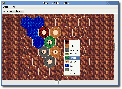 Zum Schluss darf natürlich der Spieleditor nicht fehlen. Die 25 mitgelieferten Karten sind zwar nicht schlecht, aber manchmal möchte man vielleicht eine eigene Idee umsetzen. Den Spieleditor findet man im Menü unter "Anwendungen -> Spiele -> Pioneers Editor".
Die Benutzung ist intuitiv. An der rechten und unteren Seite findet man ein "+" und "-", um neue Reihen bzw. Spalten hinzufügen. Mit einem Linksklick in ein Feld öffnet sich ein Menü, aus dem man aus den verfügbaren Landschaften eine auswählen kann. Auf diese Art vervollständigt man sein Spielfeld. Im Reiter "Einstellungen" legt man dann noch die Spieleinstellungen fest. Das heißt, die Anzahl der Spiele, die Siegpunkte, Anzahl der Karten und Gebäude bzw. Objekte, etc. Danach kann man über "Datei -> Speichern" die erstellte Landschaft speichern.
Hinweis:
Damit Pioneers später das Spiel findet, muss es im Spielordner (meistens /usr/share/games/pioneers) liegen. Um dort eine Spielvorlage zu speichern, benötigt man aber Root-Rechte. Das sinnvollste ist es, das Spiel erst im Heimatverzeichnis zwischenzuspeichern und dann als Root in den Ordner zu verschieben.
Es können im Spieleditor auch vorhandene Spiele geladen und verändert werden.
Spiel gegen KI funktioniert nicht¶
Wenn man nach einer System-Neuinstallation Pioneers installiert, kann über die GUI kein Spiel mehr gegen CPU-gesteuerte Mitspieler starten.
Um das Spiel doch zu starten, muss der Pionersserver gestartet werden, so dass man das Fenster sieht, in dem die weiteren Mitspieler angezeigt werden. Im Anschluss öffnet man separat eine Shell und gibt folgenden Befehl ein.
pioneersai -s 127.0.0.1 -p 5556 -n Donald & pioneersai -s 127.0.0.1 -p 5556 -n Dagobert & pioneersai -s 127.0.0.1 -p 5556 -n Gustav & pioneers -s 127.0.0.1 -p 5556 -n EigenerSpielername
Im Anschluss den Button "Pioneers-Client starten" betätigen und es geht los.

Infobox¶
| Pioneers - The Settlers of Catan | |
| Ursprungstitel: | Gnocatan |
| Genre: | Strategiespiel |
| Sprache: | |
| Veröffentlichung: | 1999+ |
| Entwickler: | Dave Cole |
| Systemvoraussetzungen: | - |
| Medien: | Download |
| Strichcode / EAN / GTIN: | - |
| Läuft mit: | nativ |
- Erstellt mit Inyoka
-
 2004 – 2017 ubuntuusers.de • Einige Rechte vorbehalten
2004 – 2017 ubuntuusers.de • Einige Rechte vorbehalten
Lizenz • Kontakt • Datenschutz • Impressum • Serverstatus -
Serverhousing gespendet von